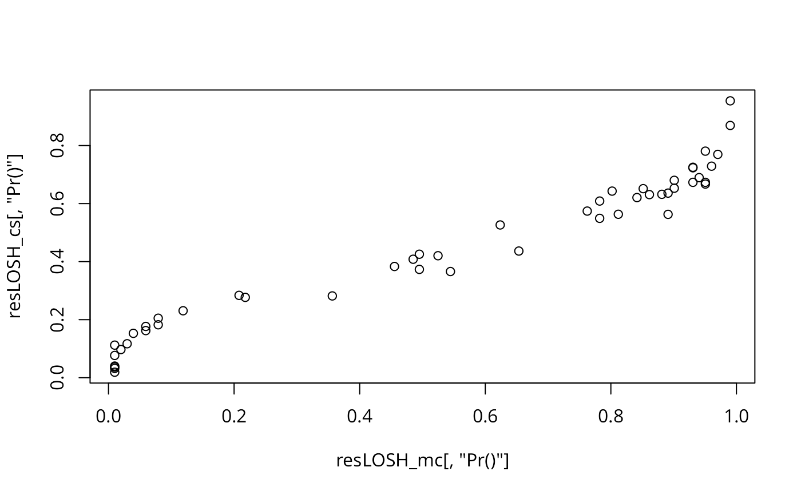

LOSH.mc.RdThe function draws inferences about local spatial heteroscedasticity (LOSH) by means of the randomisation-based Monte-Carlo bootstrap proposed by Xu et al. (2014).
LOSH.mc(x, listw, a = 2, nsim = 99, zero.policy = NULL, na.action = na.fail, spChk = NULL, adjust.n = TRUE, p.adjust.method = "none")
| x | a numeric vector of the same length as the neighbours list in listw |
|---|---|
| listw | a |
| a | the exponent applied to the local residuals; the default value of 2 leads to a measure of heterogeneity in the spatial variance |
| nsim | the number of randomisations used in the bootstrap |
| zero.policy | default NULL, use global option value; if TRUE assign zero to the lagged value of zones without neighbours, if FALSE assign NA |
| na.action | a function (default |
| spChk | should the data vector names be checked against the spatial objects for identity integrity, TRUE, or FALSE, default NULL to use |
| adjust.n | default TRUE, if FALSE the number of observations is not adjusted for no-neighbour observations, if TRUE, the number of observations is adjusted |
| p.adjust.method | a character string specifying the probability value adjustment for multiple tests, default "none"; see |
The test calculates LOSH (see LOSH) and estimates pseudo p-values from a conditional bootstrap. Thereby, the i-th value in each location is held fixed, whereas all other values are permuted nsim times over all other spatial units.
LOSH statistic
expectation of LOSH
variance of LOSH
the approximately chi-square distributed test statistics
local spatially weighted mean values
residuals about local spatially weighted mean values
p-values for Hi obtained from a conditional bootstrap distribution
Ord, J. K., & Getis, A. 2012. Local spatial heteroscedasticity (LOSH), The Annals of Regional Science, 48 (2), 529--539; Xu, M., Mei, C. L., & Yan, N. 2014. A note on the null distribution of the local spatial heteroscedasticity (LOSH) statistic. The Annals of Regional Science, 52 (3), 697--710.
René Westerholt rene.westerholt@tu-dortmund.de
LOSH, LOSH.mc
data(columbus, package="spData") resLOSH_mc <- LOSH.mc(columbus$CRIME, nb2listw(col.gal.nb), 2, 100) resLOSH_cs <- LOSH.cs(columbus$CRIME, nb2listw(col.gal.nb)) plot(resLOSH_mc[,"Pr()"], resLOSH_cs[,"Pr()"])